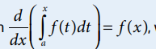

HOME
Learning Objectives
- Represent accumulation functions using definite integrals.
- The definite integral can be used to define new functions.
- If f is a continuous function on an interval containing a, then

, where x is in the interval.
Fundamental Theorem of Calculus
Accumulation Functions
Previous Topic Next Topic